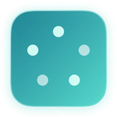
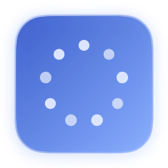
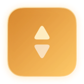
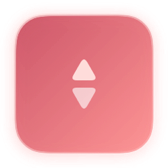
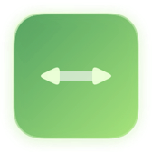
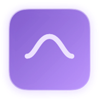
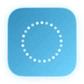
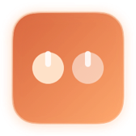
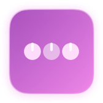

A real curriculum
Guided start to finish. Begin with five broad frequency zones and build, unit by unit, to hearing three EQ moves at once.
- 41lessons
- 9units

Unit 1, 4 lessons:Basic Frequency Zones
Unit 2, 4 lessons:Octave Frequencies
Unit 3, 4 lessons:EQ Gain
Unit 4, 4 lessons:EQ Subtle Gain
Unit 5, 6 lessons:EQ Bandwidth (Q)
Unit 6, 5 lessons:Filter Shapes
Unit 7, 4 lessons:1/3 Octave Frequencies
Unit 8, 5 lessons:Double Band
Unit 9, 5 lessons:Triple Band- Bonus, 1 lesson:Impossible Challenge